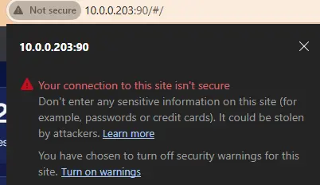
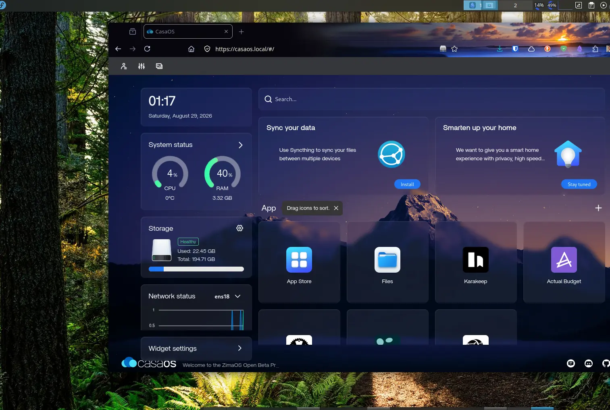

Caddy as a TLS / HTTPS Reverse Proxy for Local Services
Implementing automatic TLS certificates, internal Certificate Authorities (CA), and DNS overrides for internal home lab services like CasaOS.
We will use Caddy as a TLS/HTTPS reverse proxy in front of services like CasaOS or any other local web applications. Here’s how that works:
How Caddy Provides TLS
- Automatic HTTPS: Caddy can automatically obtain and renew certificates from Let’s Encrypt or ZeroSSL for public domains.
- Local/Internal Services: For apps that don’t have public DNS names (like CasaOS on your local lab network), Caddy can act as a reverse proxy and provide TLS for them.
- Local CA: Caddy includes a built-in Certificate Authority (CA) for issuing certificates to internal hostnames or IPs, so you still get HTTPS even without a public domain.
caddyserver/caddy: Fast and extensible multi-platform HTTP/1-2-3 web server with automatic HTTPS
Step 1 – Installing Caddy
In this environment, CasaOS is running on Ubuntu 24.04/26.04 locally at 10.0.0.203:90.

SSH into the Ubuntu server and install Caddy from the official repository:
sudo apt update
sudo apt install -y debian-keyring debian-archive-keyring apt-transport-https
curl -1sLf 'https://dl.cloudsmith.io/public/caddy/stable/gpg.key' | sudo tee /etc/apt/trusted.gpg.d/caddy-stable.asc
curl -1sLf 'https://dl.cloudsmith.io/public/caddy/stable/debian.deb.txt' | sudo tee /etc/apt/sources.list.d/caddy-stable.list
sudo apt update
sudo apt install caddy
Step 2 – Create Caddyfile
The Caddyfile will host reverse proxy rules for CasaOS and any auxiliary containerized services running on the host:
/etc/caddy/Caddyfile
Added reverse proxy entries mapping internal hostnames to specific internal service ports:

Notice there was an Nginx service previously installed as a Docker container binding port 80. By default, CasaOS runs on port 80, but due to this conflict, it was moved to port 90.
When starting Caddy with sudo systemctl start caddy, it failed because port 443 was also occupied by the legacy Nginx container. Stopping and removing the container released port 443, enabling Caddy to start immediately.

Step 3 – DNS Configuration
To allow client machines to resolve casaos.local to the server, configure the hosts file:
- Linux / macOS:
/etc/hosts - Windows:
C:\Windows\System32\drivers\etc\hosts
Open Notepad as Administrator, navigate to C:\Windows\System32\drivers\etc\hosts (ensure "All Files *.*" is selected in file dialog), add the record, and save.
10.0.0.203 casaos.localStep 4 – Certificate Authority (CA) Configuration
Export the internal Root Certificate generated by Caddy on the Ubuntu host:
sudo cat /var/lib/caddy/.local/share/caddy/pki/authorities/local/root.crt > ~/caddy-root.crtThe certificate must be imported into the trusted store of any client machine accessing the services. The easiest transfer method is downloading it directly via the CasaOS file manager GUI:

Importing into Windows Certificate Manager (certmgr.msc)
- Press Win + R, type
certmgr.msc, and press Enter. - In the left pane, expand Trusted Root Certification Authorities → Certificates.
- Right-click Certificates → All Tasks → Import.
- Browse to the downloaded
caddy-root.crtfile. - Complete the wizard, ensuring it is placed in Trusted Root Certification Authorities.
Reload Caddy after any additions or changes:
sudo systemctl reload caddyYou can now navigate from your client browser directly to https://casaos.local.
If you encounter a browser cache warning during the first connection:

Simply restarting the browser loads the newly imported root certificate:

All auxiliary internal services requiring secure HTTPS contexts now function seamlessly:


DNS & CA Configuration for Linux Client Machines
1. Host file configuration:
sudo nano /etc/hosts
# Add service hostnames:
10.0.0.203 casaos.local
10.0.0.203 vaultwarden.local
10.0.0.203 actual.local
10.0.0.203 karakeep.local
10.0.0.203 nginx.local2. Root Certificate Trust Store:
# Copy cert into system trust anchor directory:
sudo cp ~/caddy-root.crt /etc/pki/ca-trust/source/anchors/
# Update the system trust database:
sudo update-ca-trust extract3. Test Connection:
https://casaos.localImportant Notes & Browser Considerations
-
Mozilla Firefox maintains its own internal CA store separate from the OS. To import:
Go to Settings → Privacy & Security → Certificates → View Certificates → Authorities → Import, selectcaddy-root.crt, and check "Trust this CA to identify websites". -
Chromium / Chrome / Edge on Linux (Fedora/RHEL/Ubuntu) utilizes the system trust store, so the
update-ca-trustorupdate-ca-certificatescommand is sufficient.
